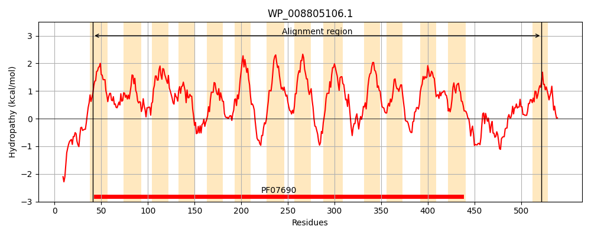
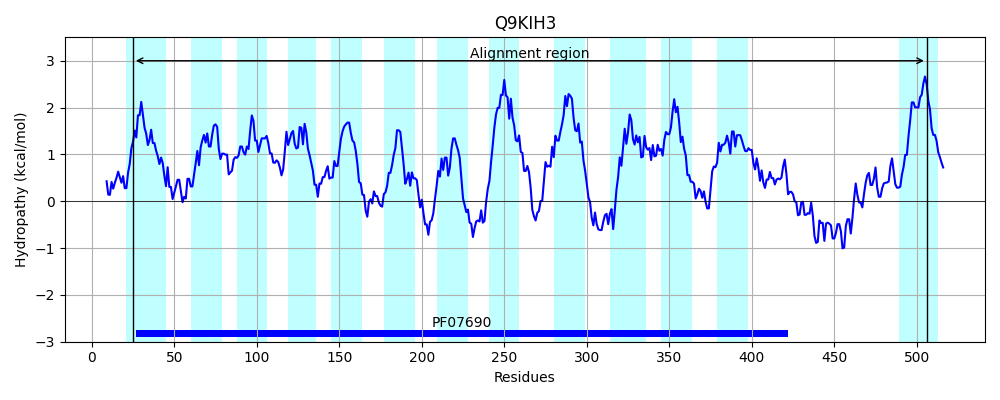
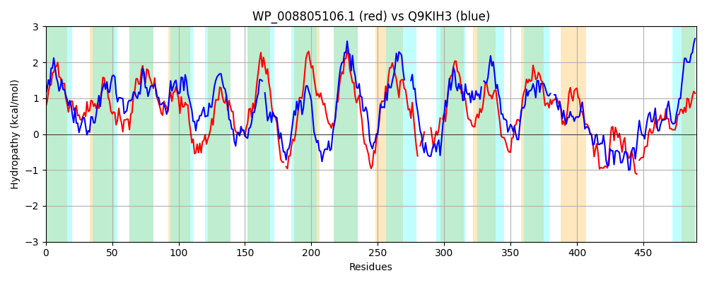

Hit Accession: Q9KIH3
Hit TCID: 2.A.1.3.18
Hit Description: gnl|BL_ORD_ID|18353 gnl|TC-DB|Q9KIH3|2.A.1.3.18 Putative transport protein RmrB - Rhizobium etli.
Mach Len: 490
e:0.000000
Query TMS Count : 14
Hit TMS Count: 13
TMS-Overlap Score: 11.200000
Predicted Substrates:CHEBI:30762;salicylate, CHEBI:5077;flavonoid, CHEBI:62488;signalling molecule, CHEBI:26115;phytoalexin, CHEBI:23888;drug
BLAST Alignment:
Score: 261 , Bit scores: 105 bits, E-value: 5.5e-24, Alignment length: 490, Percentage identity: 22
Query: 41 VVGLLVCLTGALGNAVVTANLQLLQGTFAAWSTEIAWLPAVYVMTNVSINLLLVKFRQQFGLRAFTEGFLVLYVLVTFFHLFVNDLSSAMMVRAAHGMVAAALSSLGIYYQVQAWPARHRLKGLTIGITGSSLAIPLARLFSTELLQIDEWRGLYFFELGLALVSLACVIALKLPPSDRK-KVFEKKDFITFFLLAPGMALVCAVLSLGRLEWWFEAPWIGWSLAAAVVLIVAAIAFEHNRSNPLLNTKWLSSGSIVRLGLIMLLIRIVLAEQNTGVIGWL-QYVG----LQNEQMTN-LAWSIFAGILCGIIASCLTLNPQKLYWPTATALALIMVASLLDSQSNALTRPEQLMFSQFLLGFGSAFFLAPAMLAGIGGVFADPRNLVSFSVLFGMSQNIGGLLGSAILGTFQTWREKFHSSQLADQITTLNPLIVERLQQYSQMY-QSQIGDSTLLNVQATTLLQNAATLQANILAWNDTYLLTAAISA 522
+ G++ L + A+L ++G AW+ Y++ + + L F F R + +L+ L + F DL + +++R L + + P + GL I + A + L + W+ ++F +L+ +A +AL L + + ++ D+ +A G++ + VL G + WF +P+I A V + A I E PL+ + L+ + L+ +L+ + L G + L QY+G EQ+ N LAW+ +L + L Y +++ ++ ++ +A +Q + G A L P G+ P + + S L M +N+GG +G+A LGT T RE+FHS+ + IT + +RL + S + Q + D + + +A L QA I+ ++DT+ + + A
Sbjct: 25 LAGMIGAFMAILNIQITNASLLDIEGGIGTGVDNGAWISTSYLIGEIVVIPLTAYFSSVFSFRRYILVNSILFPLFSMACAFAQDLGTMILLRGFRAFAGGVLIPMAFTMVLTKLPKSQQPLGLAIFALSVTFAPAIGPTIGGYLTENYGWQTIFFINTAPSLI-MADALALTLDKQPMQLHLLKEGDWAGIITMAIGLSALQTVLEEGNKDDWFSSPFIVKLSIVAFVFLAAFIWIELRVKKPLVKLRLLTQRNFGIGVLVNVLVGVALF----GTVYILPQYLGQVQRYNAEQIGNVLAWTGLPKVLLIPLVPVLMKGFDARYIGFI-GISIFAISCFMNIMLSADNAGDQFWIPNIVRAIGQALVLTPITAITTAGIA--PVDAAAASGLTNMLRNLGGAVGTASLGTILTKREQFHSNIIGQSITLTRDEVRDRLGKLSGYFIQHGVTDPAVASQKAIVALGQTVKRQALIMGFSDTFAVIGVVLA 506 | Protein Hydropathy Plots: |
|---|
|  |  |
Pairwise Alignment-Hydropathy Plot:
|
|---|
|  |